Build Guide
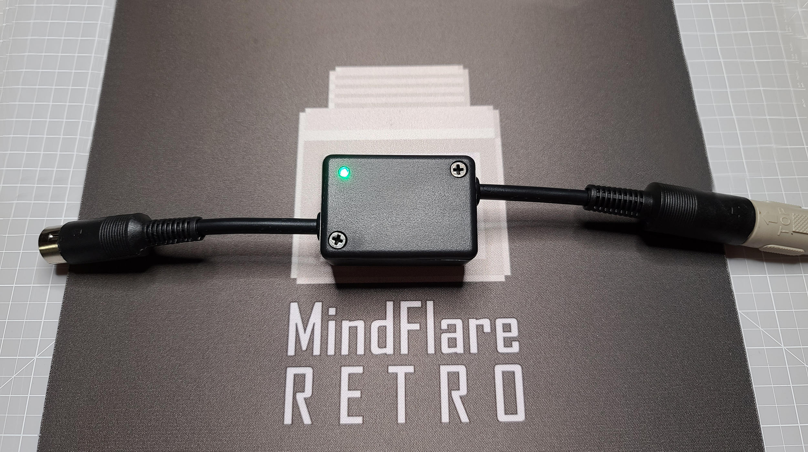
Introduction
The original Commodore 64 power supply — that iconic black or beige "brick" for some of us — with the logo, is one of the most notorious failure points in the entire C64 ecosystem. After decades of use, the internal 5VDC voltage regulator can fail catastrophically, sending an uncontrolled surge of voltage directly into your C64's sensitive RAM chips and integrated circuits. The result is permanent, often irreparable damage to a machine that may have survived + years.
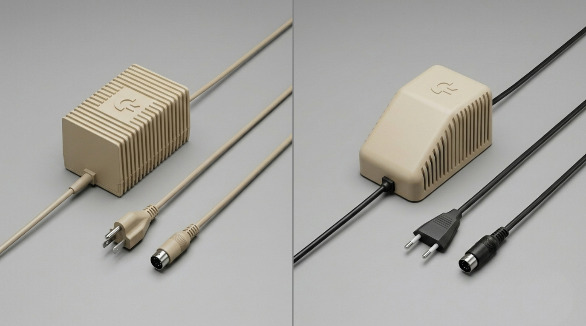
Enter the C64 Saver, a circuit designed by electronics expert @bwack. This compact inline protection device monitors the 5VDC rail and instantly disconnects power to your C64 the moment voltage rises above a safe threshold. It installs completely transparently — sitting between your power supply and your Commodore 64 — and during normal operation you'll never know it's there. Until the day it saves your machine.
This guide walks you through assembling version 2.4 of bwack's C64 Saver PCB, wiring it to a pair of DIN connectors, and housing it in a Hammond 1551G enclosure. The finished device is small, professional-looking, and could save your C64 from an otherwise fatal power supply failure.
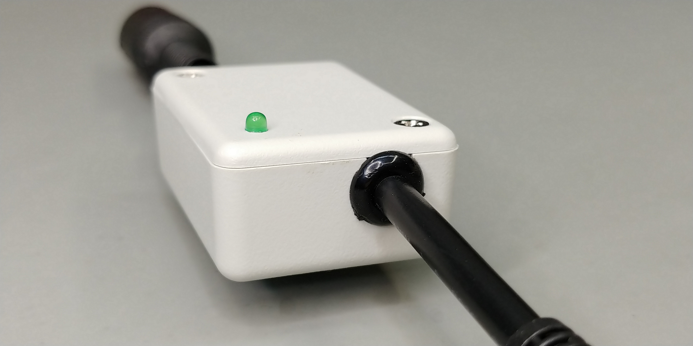
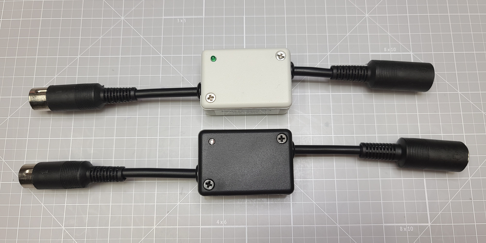
Safety & Disclaimer
The Commodore 64 power supply operates on mains-derived voltages. The 9VAC lines carry approximately 9V AC at up to 1A — capable of delivering a shock. The 5VDC rail is lower risk but still part of a mains-connected supply chain.
Always disconnect the power supply from the wall outlet before handling the device, soldering connections, or making any wiring changes. Never work on the circuit while it is powered. Verify the power is off before touching any connections.
Soldering irons operate at temperatures of 300–450°C (570–840°F). Keep the iron away from skin, cables, and flammable materials. Use a proper soldering iron stand. Allow solder joints to cool before handling the PCB.
A cross-wiring error between Pin 5 (+5VDC) and Pin 6/7 (9VAC) on the DIN connector will result in immediate hardware damage to the Commodore 64. Double-check all wiring against the pinout diagram before applying power. There is no protection against a wiring error inside the Saver itself.
Disclaimer
This build guide is provided for educational and informational purposes. The C64 Saver circuit was designed by @bwack; this guide was produced by MindFlareRetro based on the designer's published documentation and build videos. MindFlareRetro assumes no liability for damage to equipment, property, or persons resulting from the construction or use of this device. Build and install at your own risk.
Always verify component values, polarities, and wiring before applying power. If you are uncertain about any step, consult an experienced builder or seek professional assistance.
Theory of Operation
The C64 Saver uses a small number of inexpensive components to create a fast, reliable over-voltage protection circuit. Here's how it works:
Normal Operation
When the 5VDC rail is within its normal operating range, the TL431LP precision shunt regulator (D1) monitors the voltage through a resistor divider network (R1–R6). With voltage below the trip threshold, D1 holds the 2N7000 transistor (Q1) in its off state.
With Q1 off, the gate of the IRFR5305 P-channel MOSFET (Q2) is pulled low, keeping Q2 in its conducting state. Power flows freely from J1 (input) through Q2 to J6 (output) — your C64 receives normal, clean power.
Over-Voltage Condition
If the PSU 5VDC rail rises above approximately 5.5–6V (due to regulator failure), D1's reference threshold is exceeded. D1 activates, driving current through Q1's gate-source junction and turning Q1 on.
With Q1 on, the gate of Q2 is pulled high, switching Q2 off. The 5VDC path to the C64 is instantly broken. The 9VAC lines pass directly through the device and are unaffected by this protection logic.
Normal voltage → Q2 ON → C64 powered normally.
Over-voltage → Q1 triggers → Q2 OFF → 5VDC cut → C64 protected.
The zener diodes D2 and D3 (1N5235B, 6.8V) provide additional voltage clamping for gate protection. Capacitor C1 (47µF) provides supply decoupling and noise filtering.
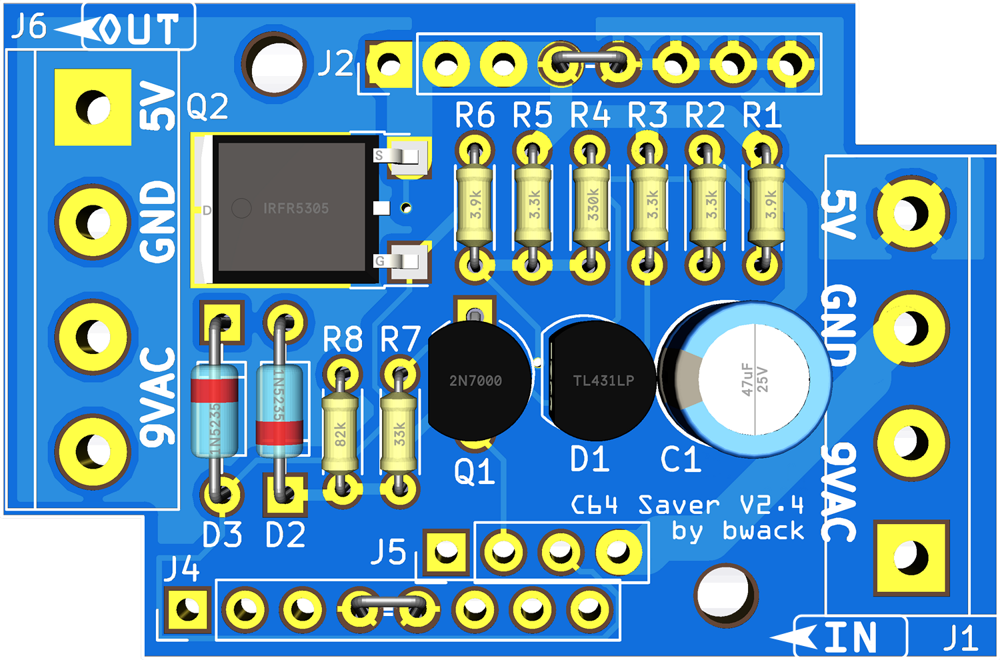
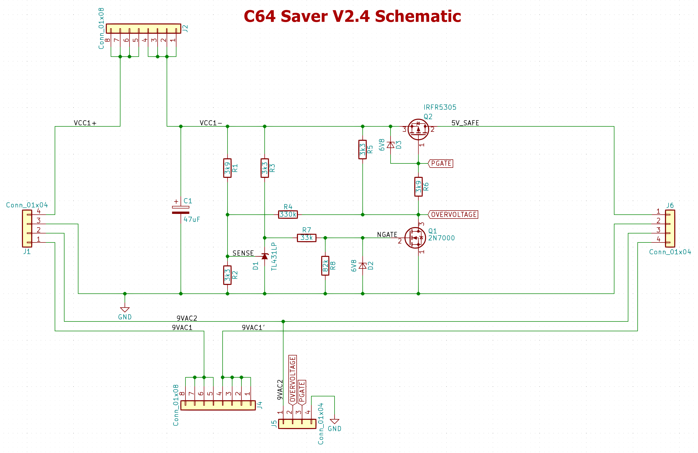
What You'll Need
If this is your first time building an electronics kit, welcome! The C64 Saver is a great first project. It has a small number of components, and while one of them (the IRFR5305 MOSFET) is SMD (surface-mount), it's in a large and forgiving DPAK package. You've got this — and this guide will walk you through every step.
Tools Required
- Temperature-controlled soldering iron — A station with adjustable temperature is strongly recommended. Set to approximately 320–360°C for lead-free solder or 300–330°C for leaded solder. A fine conical or small chisel tip is ideal.
- Solder — 0.6mm or 0.8mm diameter. 60/40 lead-tin solder is easiest to work with for beginners; SAC305 lead-free solder works well at slightly higher temps.
- Flux — Rosin-core paste or liquid flux will make soldering the SMD MOSFET significantly easier. No-clean flux is convenient.
- Flush-cut diagonal cutters (dikes) — For trimming component leads after soldering.
- Needle-nose pliers — For bending and positioning component leads.
- Wire stripper — For preparing wires to connect to the DIN connectors and PCB terminal blocks.
- Digital multimeter — For continuity testing jumpers and verifying voltage before plugging into your C64.
- Helping hands / PCB holder — Highly recommended for holding the PCB steady while soldering.
- Solder wick or solder sucker (desoldering braid/pump) — For correcting mistakes.
- Magnifying glass or loupe — Useful for inspecting solder joints, especially the SMD component.
- Small flat file or fine sandpaper (220–400 grit) — For preparing DIN connector pins before soldering (see Pro Tip in Step 7).
- Safety glasses — Solder can sometimes spit. Protect your eyes.
Optional but Helpful
- Magnifying work lamp — For better visibility when placing and inspecting small components.
- Brass tip cleaner or wet sponge — Keep your iron tip clean throughout the build.
- Isopropyl alcohol (90%+) and a soft brush — For cleaning flux residue after soldering.
- Heat shrink tubing — For insulating wire connections inside the enclosure.
- Small Phillips screwdriver — For the Hammond enclosure lid screws.
Soldering Resources
If you're new to soldering, these resources will help you get up to speed before you start:
- Adafruit Guide to Excellent Soldering — A comprehensive, well-illustrated guide for beginners.
- iFixit: How to Solder and Desolder — Step-by-step with photos.
For SMD soldering specifically, consider purchasing a practice kit from Amazon.ca, Amazon.com, or AliExpress before tackling the Q2 MOSFET step. Even an hour of practice goes a long way.
Bill of Materials
The following components are required to build the C64 Saver V2.4 PCB. Purchase links are provided for DigiKey Canada (.ca) and DigiKey USA (.com). All links have been verified at time of publication.
The PCB BOM below covers only the components that mount to the PCB. You will also need:
- 1× Female 7-pin 270° DIN connector with short cable (PSU input side → J1 IN)
- 1× Male 7-pin 270° DIN connector with short cable (C64 output side → J6 OUT)
- Hookup wire — 4 conductors, ideally colour-coded (red, black, and 2× a third colour for 9VAC). Two short lengths needed (13–15 cm / 5–6 inches each should be sufficient). The build photos in this guide use Tensility 4-conductor 18AWG — DigiKey CA / DigiKey US.
- Hammond 1551G enclosure — grey, black, or translucent blue (listed below)
- Optional: 3mm green LED + 330Ω resistor (for power indicator)
| Ref | Component | Value / Part | Qty | Mfr Part # | DigiKey CA | DigiKey US |
|---|---|---|---|---|---|---|
| Resistors — 0.25W, 1% Tolerance, Axial Through-Hole | ||||||
| R1, R6 | Metal Film Resistor | 3.9 kΩ | 2 | RNMF14FTC3K90 | DigiKey CA | DigiKey US |
| R2, R3, R5 | Metal Film Resistor | 3.3 kΩ | 3 | RNMF14FTC3K30 | DigiKey CA | DigiKey US |
| R4 | Metal Film Resistor | 330 kΩ | 1 | RNMF14FTC330K | DigiKey CA | DigiKey US |
| R7 | Metal Film Resistor | 33 kΩ | 1 | RNMF14FTC33K0 | DigiKey CA | DigiKey US |
| R8 | Metal Film Resistor | 82 kΩ | 1 | RNMF14FTC82K0 | DigiKey CA | DigiKey US |
| Capacitor — Electrolytic, Radial Through-Hole, 6.3×5mm | ||||||
| C1 | Electrolytic Capacitor | 47 µF / 25V | 1 | 25ML47MEFC6.3X5 | DigiKey CA | DigiKey US |
| Diodes | ||||||
| D1 | Shunt Voltage Reference (TO-92) | TL431LP | 1 | TL431BILPG | DigiKey CA | DigiKey US |
| D2, D3 | Zener Diode (DO-35, Axial) | 6.8V / 500mW | 2 | 1N5235B-TR | DigiKey CA | DigiKey US |
| Transistors | ||||||
| Q1 | N-Channel MOSFET (TO-92) | 2N7000 | 1 | 2N7000-D26Z | DigiKey CA | DigiKey US |
| Q2 | P-Channel MOSFET (SMD DPAK) SMD | IRFR5305 | 1 | IRFR5305TRPBF | DigiKey CA | DigiKey US |
| Enclosure — Hammond 1551G (choose one) | ||||||
| — | Hammond 1551G Enclosure | Grey (1551GGY) | 1 | 1551GGY | DigiKey CA | DigiKey US |
| — | Hammond 1551G Enclosure | Black (1551GBK) | 1 | 1551GBK | DigiKey CA | DigiKey US |
| — | Hammond 1551G Enclosure | Translucent Blue (1551GTBU) | 1 | 1551GTBU | DigiKey CA | DigiKey US |
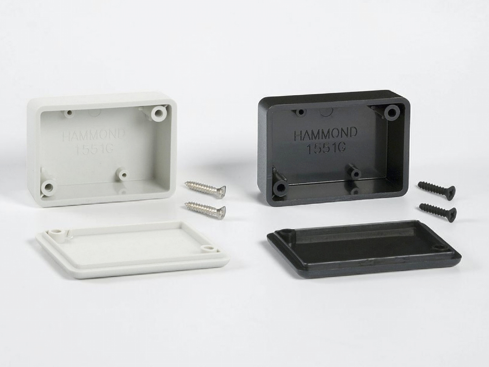

MindFlareRetro Video Series
The C64 Saver build is documented in a 3-part video series on the MindFlareRetro YouTube channel. Watching the videos before you begin — or keeping them open in a second window — is highly recommended alongside this written guide.
Watch all three videos in full before picking up your soldering iron. Getting the complete picture of the build process will make each individual step much clearer when you get to it.
Step-by-Step Build
Work through the steps below in order. General soldering best practices: tin your iron tip before each joint, apply a small amount of flux, heat the pad and lead together before flowing solder, and allow each joint to cool naturally. Inspect each joint before moving to the next step.
Keep the PCB component layout image (shown above) open for reference throughout assembly. Always confirm component values and orientations against both this guide and the PCB silkscreen before soldering.
Reading Resistor Values
The resistors in this kit are 1% tolerance 5-band metal film resistors. The first three bands give the first three digits, the fourth band is the multiplier, and the fifth band indicates tolerance (brown = 1%).
| Ref | Value | Band 1 | Band 2 | Band 3 | Band 4 (×) | Band 5 (Tol.) |
|---|---|---|---|---|---|---|
| R1, R6 | 3.9 kΩ | Orange (3) | White (9) | Black (0) | Brown (×10) | Brown (1%) |
| R2, R3, R5 | 3.3 kΩ | Orange (3) | Orange (3) | Black (0) | Brown (×10) | Brown (1%) |
| R4 | 330 kΩ | Orange (3) | Orange (3) | Black (0) | Orange (×1k) | Brown (1%) |
| R7 | 33 kΩ | Orange (3) | Orange (3) | Black (0) | Red (×100) | Brown (1%) |
| R8 | 82 kΩ | Gray (8) | Red (2) | Black (0) | Red (×100) | Brown (1%) |
Tip: Always confirm values with a multimeter on the resistance (Ω) setting before soldering. It's much harder to remove an incorrect resistor after the fact.
Resistors are the easiest components to start with, and soldering them first keeps the PCB clean and uncluttered for subsequent steps.
Resistors are non-polarized — they work correctly in either orientation. However, installing them all in the same direction (e.g., lowest band to the left) makes future troubleshooting easier and looks more professional.
- Using the PCB layout diagram as a reference, identify the correct footprint on the PCB for each resistor value. The PCB silkscreen labels each position (R1–R8).
- Bend the leads of each resistor down to match the footprint hole spacing. For the standard 1/4W axial package, the holes are spaced approximately 10mm apart.
- Insert the resistor through the PCB from the top (component side). The flat, component side is the side with the white silkscreen text. The resistor body sits flat against the board.
- Fold the leads slightly outward on the solder side to hold the resistor in place while you solder.
- Solder each lead: touch the iron to both the pad and the lead simultaneously for 2–3 seconds, then flow a small amount of solder. A good joint is shiny, concave, and volcano-shaped.
- Trim the excess leads flush with the PCB using your diagonal cutters.
- Repeat for all 8 resistors (R1 through R8).
Installing a resistor in the wrong position is the most common mistake — values are similar (3.9k vs 3.3k vs 33k) and easy to confuse. Before soldering each resistor, confirm the value against the silkscreen label and the BOM.
In particular: R4 (330kΩ) is the outlier — over 80× the value of R2/R3/R5. Installing it in the wrong position will affect the trip-point voltage.
The C64 Saver V2.4 PCB is designed to optionally support an add-on board. Without that board installed, two jumpers must be bridged for the protection circuit to function. If these jumpers are missing, no power will pass to the output terminal — your C64 will not turn on.
Jumpers are short bridges across two adjacent pads. You can make them using a short length of trimmed resistor lead wire, or a standard 2.54mm male pin header with a jumper cap.
- Locate J2 on the PCB — it is in the horizontal header row near the top of the board, marked by a white silk-screen box.
- Bridge the two pins at J2 specifically marked by the J2 label. Solder a short wire across both pads (or install a 2-pin header and jumper cap).
- Locate J5 on the PCB — it is in the horizontal header row near the bottom of the board, also marked by a white silk-screen box.
- Bridge the two pins at J5 in the same manner.
- After soldering, use a multimeter set to continuity mode and verify that there is continuity (beep) across each jumper pair.
Save the trimmed resistor leads from Step 1 — they're the perfect material for making jumper bridges. Bend a short length into a U-shape to bridge the pads cleanly.
Electrolytic capacitors are polarized. Installing C1 backwards can damage the capacitor and potentially cause it to vent or fail. Verify orientation before soldering.
- The negative (−) lead is the shorter lead, and is marked by a stripe on the capacitor body (usually white or grey with "−" symbols).
- The positive (+) lead is the longer lead.
- The PCB silkscreen shows a "+" symbol or a filled half-circle for the positive hole. Match this to the longer lead.
- Identify C1 on the PCB (to the right-centre of the board).
- Insert C1 with the correct polarity — longer (+) lead into the "+" hole.
- The capacitor body should sit flat and close to the PCB, fitting within the 6.3mm diameter footprint.
- Solder both leads from the back of the board. Trim leads flush.
All three diode-type components in this step are polarized. The cathode (−) end is marked by a painted band near one end of the body. Match this band to the band symbol shown on the PCB silkscreen.
D1 — TL431LP Shunt Voltage Reference (TO-92 Package)
The TL431 looks like a small transistor in a TO-92 (flat-sided) package. It has three leads: Anode (A), Cathode (K), and Reference (R). The PCB silkscreen and the TL431 datasheet show which lead goes where — match the flat side of the package to the flat side shown on the silkscreen.
D2 & D3 — 1N5235B Zener Diodes (DO-35, Axial)
These are small glass-body axial diodes. Like standard diodes, the cathode band (a painted ring near one end) must match the band line on the PCB silkscreen. Install D2 and D3 in their marked positions on the bottom-left area of the PCB.
- Insert D1 into the PCB in the correct orientation (match flat side of TO-92 body to silkscreen).
- Insert D2 and D3 with the cathode bands aligned to the silkscreen.
- Solder all leads and trim flush.
The 2N7000 is in a TO-92 package (flat on one side, round on the other). The three leads are Gate (G), Source (S), and Drain (D). The PCB silkscreen shows the flat side orientation — match the flat face of Q1's body to the flat face on the silkscreen symbol.
- Locate Q1 on the PCB (centre-bottom area, to the left of D1 and C1).
- Hold Q1 so the flat face matches the silkscreen orientation.
- Insert the leads into the three holes, ensuring it sits flush to the PCB.
- Solder all three leads and trim flush.
The IRFR5305 is a surface-mount component, which sounds scary if you've never done SMD soldering. But the DPAK package is one of the largest and most forgiving SMD packages out there. The pads are big, the component is easy to handle with tweezers, and with a little flux it's very manageable. You've got this.
If you'd like to practice first, an SMD soldering practice kit is a great investment — even 30 minutes of practice will make this step much easier.
The DPAK (TO-252) package has three leads at the front (Gate, Drain, Source) and a large metal tab at the rear which is also the Drain connection and acts as a heatsink.
Installing Q2 backwards will prevent the circuit from functioning. The metal tab / heatsink face of the DPAK goes toward the large solder pad at the rear. The three small leads face toward the three small pads at the front. Verify against the PCB silkscreen and the image below before applying solder.
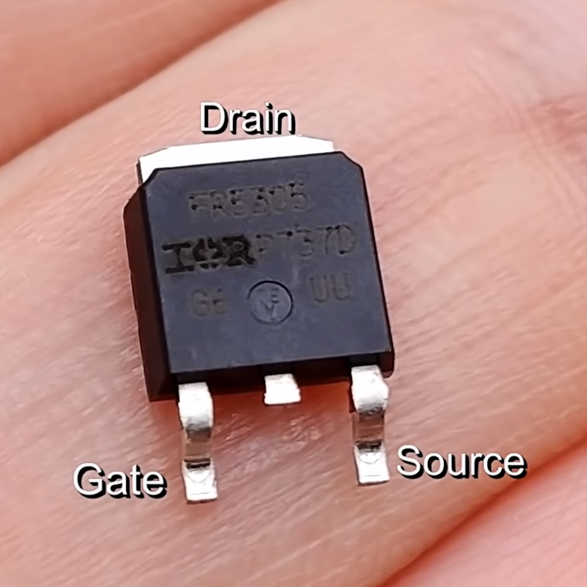
Soldering Procedure
- Apply a small amount of flux paste to the pads on the PCB where Q2 will sit.
- Position Q2 on the pads using tweezers. The large metal tab should sit over and overlap the large rear pad; the three small leads should align with the three small front pads.
- Tack-solder the large tab first. Touch the iron to the large rear pad and flow solder under the tab. This anchors the component in place.
- Check alignment — the small leads should still be centred on their pads. Adjust if needed while the solder is still warm.
- Solder the three small front leads individually. Use a small amount of solder and work quickly — 2–3 seconds per joint.
- Inspect the joint area with a magnifier. Ensure there are no solder bridges between the three small leads.
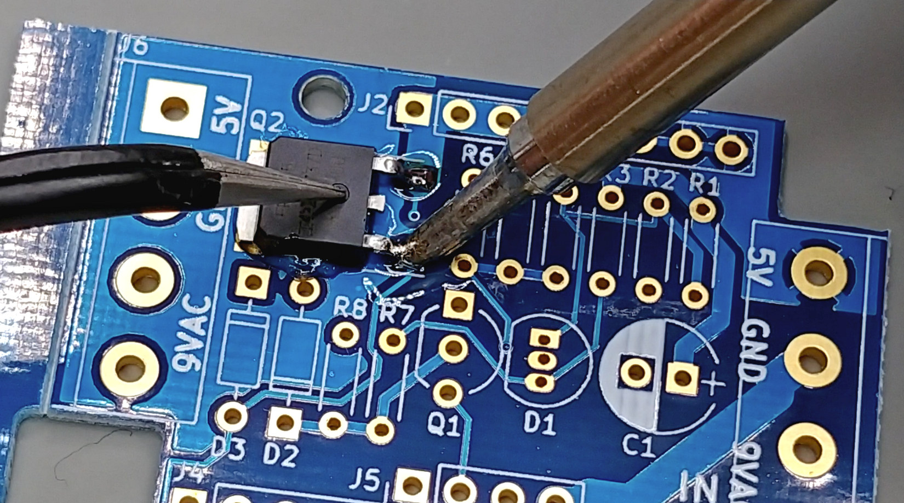
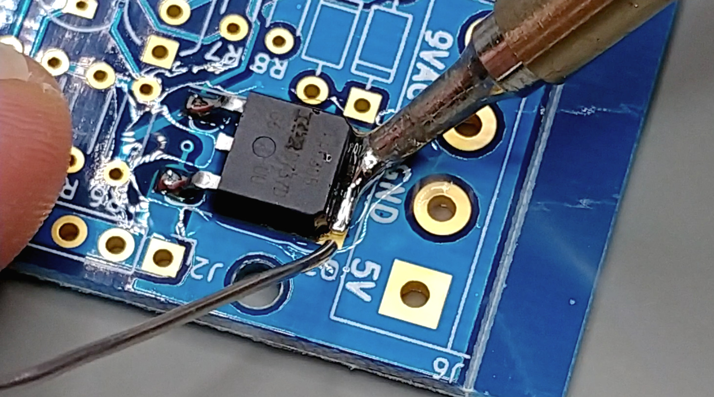
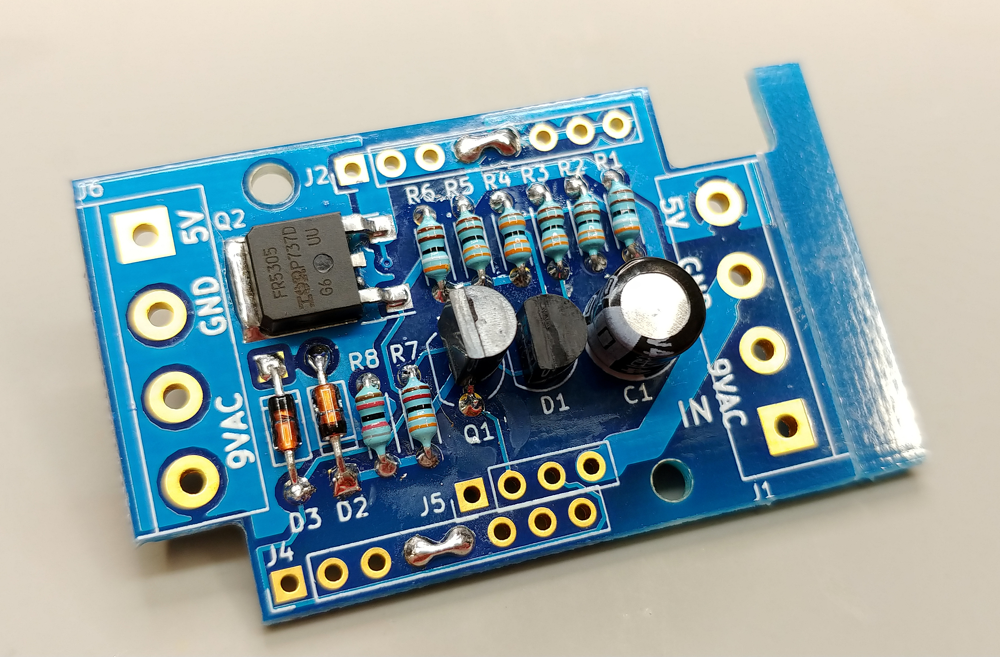
The C64 Saver requires two 7-pin DIN connectors:
- Female 7-pin 270° DIN — INPUT side. This receives the male DIN plug coming from the C64 PSU cable.
- Male 7-pin 270° DIN — OUTPUT side. This plugs directly into the female DIN port on the back of the Commodore 64.
Each connector is wired the same way — same pins, same signals. Refer to the pinout diagram below. Note that the pinout is described from the front (plug/socket face) view; when you flip the connector over to solder from the rear, the pin positions are mirrored.
DIN connector pin numbering can vary between manufacturers and the numbers are often moulded very small into the connector housing. Always locate and verify pin numbers physically on your specific connector before soldering any wire. A wiring error is permanent damage to your C64.
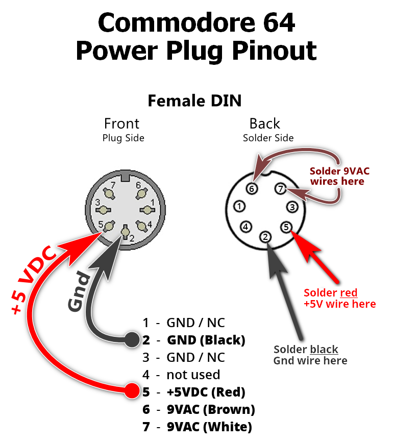
Pin Assignment Reference
| Pin | Signal | Wire Colour | Notes |
|---|---|---|---|
| 2 | GND | Black | Primary ground connection |
| 5 | +5VDC | Red | Protected 5V rail — critical |
| 6 | 9VAC | Brown | 9V AC — best practice wire colour |
| 7 | 9VAC | White | 9V AC — AC polarity interchangeable |
| 1, 3, 4 | NC / GND | — | Not connected in this build |
Lightly sand or file the surface of the DIN connector pins that you will be soldering the wires to. Roughing up the shiny electroplated surface will shorten the soldering iron dwell time required. The melted solder will stick faster — "potato method" not required.
Soldering Wires to the DIN Connectors
- Strip outer insulation from cable leads exposing 4 colored hookup wires — one for each signal (GND, +5V, 9VAC×2). Exposed length depends on your enclosure layout, but approximately 80–100mm works well for the Hammond 1551G.
- Strip approximately 4mm of insulation from each wire end.
- Tin the wire ends and the DIN connector pins with a small amount of solder.
- Working from the solder side (rear) of the connector, solder each wire to its correct pin. Use the reference table above.
- Keep each joint neat — excess solder can bridge adjacent pins and cause catastrophic shorts. Inspect carefully with a magnifier or loupe.
- Repeat for both the female (input) and male (output) connectors. The wiring is identical on both.


The PCB has two 3-position screw terminal blocks: J1 (IN) at the bottom-right and J6 (OUT) at the top-left. Each has positions for 5V, GND, and 9VAC.
The wires from the female DIN connector (receives the PSU) connect to J1 (IN) at the bottom-right of the PCB.
The wires from the male DIN connector (plugs into C64) connect to J6 (OUT) at the top-left of the PCB.
Reversing these will prevent the protection circuit from operating correctly.
| PCB Terminal | Location | Connects To | Signal |
|---|---|---|---|
| J1 — IN | Bottom-right | Female DIN (from PSU) | 5V, GND, 9VAC |
| J6 — OUT | Top-left | Male DIN (to C64) | 5V, GND, 9VAC |
- Loosen the screws on the J1 terminal block.
- Insert the wires from the female DIN connector into the appropriate J1 terminals: red (+5V) → J1-5V, black (GND) → J1-GND, brown & white (9VAC) → J1-9VAC.
- Tighten the terminal block screws firmly. Tug each wire gently to confirm it is secure.
- Repeat for J6 using the wires from the male DIN connector.
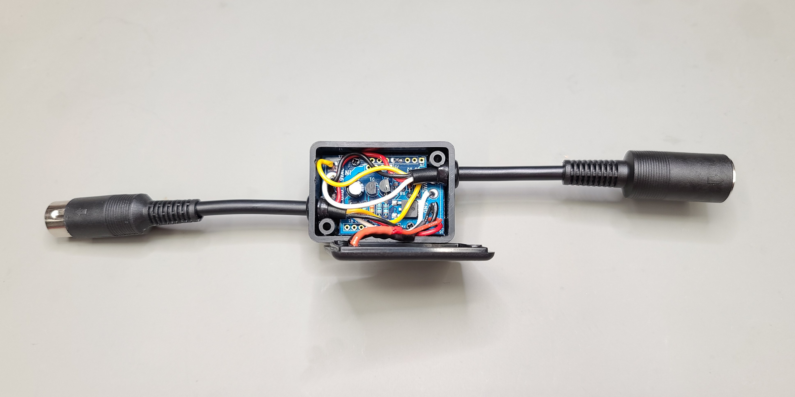
The Hammond 1551G is a two-piece ABS plastic enclosure. The PCB and wiring sit inside one half; the lid snaps or screws on to complete the assembly.
- Plan cable routing first. Before final assembly, lay out the PCB and DIN connector cables inside the enclosure to confirm everything fits and the lid closes cleanly.
- The DIN connector cables exit through the two short sides of the enclosure (a rubber or silicone strain relief is recommended). You may need to cut or file small slots or holes in the enclosure ends to allow the cables to pass through cleanly. Use a small file or rotary tool.
- If installing a green LED indicator (see optional step below), drill a small hole in the lid for the LED now, before closing the enclosure.
- Position the PCB inside the enclosure. The screw holes in the 1551G align with standard PCB mounting holes using self-tapping #2 x 3/16" screws (not included with Hammond enclosures – see Hammond P/N 1551ATS100) — otherwise, the PCB may be secured with a small amount of non-conductive adhesive or simply resting snugly in the enclosure.
- Route cables neatly and close the lid. Secure with the supplied screws.

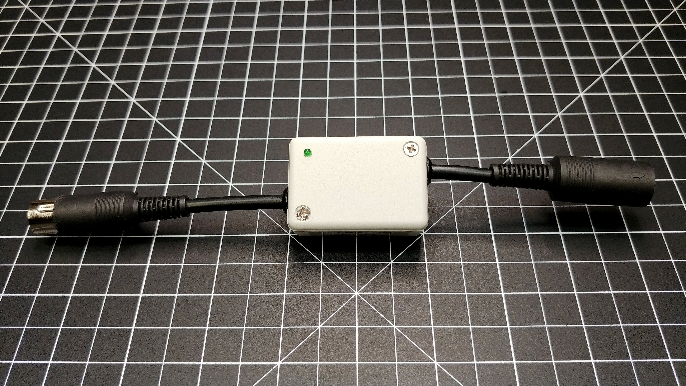
A green LED can be added as a visual indicator that 5VDC is present and within safe operating range on the output side (J6). When the C64 Saver trips due to an over-voltage, the LED will also extinguish — confirming the protection circuit activated.
Parts Needed
- 1× 3mm green LED (standard diffused)
- 1× 330Ω resistor (1/4W)
Wiring
Solder the 330Ω resistor in series with the LED anode (longer lead). Connect this series combination between the +5VDC output (J6-5V terminal) and GND (J6-GND terminal).
- LED anode (+, longer lead) → 330Ω resistor → J6-5V
- LED cathode (−, shorter lead) → J6-GND
LEDs are polarized. The longer lead is the anode (+). Connecting the LED backwards will prevent it from lighting but will not damage the circuit. If your LED doesn't light after assembly, try reversing it.
Drill a 3mm hole in the Hammond enclosure lid for the LED before final assembly. The LED can be press-fit or secured with a small dab of hot glue.
Testing & Verification
Before plugging the C64 Saver into your Commodore 64 for the first time, perform the following checks. Taking five minutes here can save your machine.
Perform all visual inspection and continuity checks with the power supply completely unplugged from the wall. Only apply power at the final voltage verification step, and never while your hands are in contact with the circuit.
Step A — Jumper Continuity Check
Set your multimeter to continuity mode (beep/diode setting). Probe across the two pads at J2 and confirm continuity. Repeat for J5. Both jumpers must show a solid beep. If either fails, re-inspect the solder joint or jumper wire.
Step B — Visual Solder Bridge Inspection
Using a magnifying glass or loupe, carefully inspect:
- The rear of the female DIN connector — look for solder bridges (unintended blobs connecting adjacent pins). Any bridge between Pin 5 (+5V) and Pins 6/7 (9VAC) will cause instant C64 damage when powered.
- The Q2 MOSFET front leads — confirm the three small pads are separate with no bridges between them.
- The J1 and J6 terminal blocks — confirm no solder whiskers have bridged adjacent terminals.
Step C — Component Polarity Re-Check
Before powering up, take one final look at all polarized components:
- C1 — stripe (negative) band on body should face away from the "+" pad marking on the silkscreen.
- D1 — flat face of TO-92 body matches silkscreen orientation.
- D2, D3 — cathode bands align with the band marks on the silkscreen.
- Q1 — flat face of TO-92 body matches silkscreen orientation.
- Q2 — metal tab faces toward the large rear pad.
Step D — First Power Test
- Connect the C64 PSU to the female DIN input of the C64 Saver. Do not yet connect the male DIN output to the C64.
- Plug the PSU into the wall. If the optional LED is installed, it should illuminate green.
- Set your multimeter to DC voltage mode. Probe the J6-5V terminal (positive probe) and J6-GND terminal (negative probe). You should read approximately 4.85–5.15VDC. Anything significantly above 5.5V suggests a PSU fault; below 4.5V may indicate a wiring issue.
- Set the multimeter to AC voltage mode. Probe the J6-9VAC terminal and J6-GND. You should read approximately 9VAC.
- If all measurements are correct, unplug the PSU, wait for it to fully discharge, and then connect the male DIN output to your C64.
Congratulations — your C64 Saver is complete! It will now silently monitor your C64's 5VDC supply every moment it's in use. If your PSU ever fails with an over-voltage condition, the Saver will trip and protect your machine.
Credits & Attribution
Circuit Design
The C64 Saver V2.4 circuit was designed by bwack — an electronics enthusiast and prolific contributor to the Commodore retro community. bwack has released the design openly for the community to build and enjoy.
If you find bwack's work valuable, consider supporting the channel.
Build Guide
This written guide was produced by MindFlareRetro, a Commodore and retro computing channel dedicated to preserving and enjoying classic hardware. The guide is based on bwack's original documentation, assembly notes, and the MFR video build series.
The C64 Saver circuit design is the intellectual property of @bwack. This build guide is the work of MindFlareRetro and is provided for personal, non-commercial use. Please credit both bwack and MindFlareRetro if you reproduce or adapt this content.